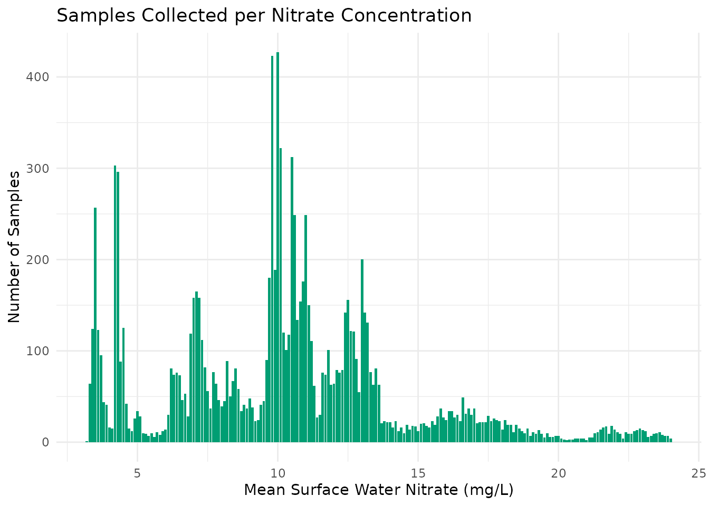
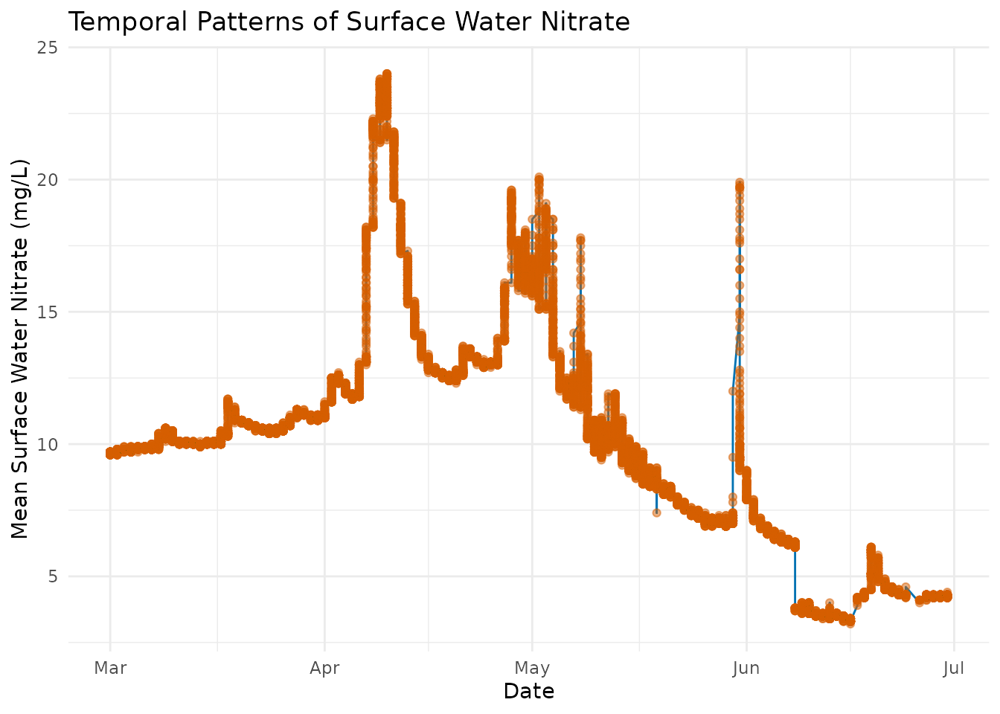
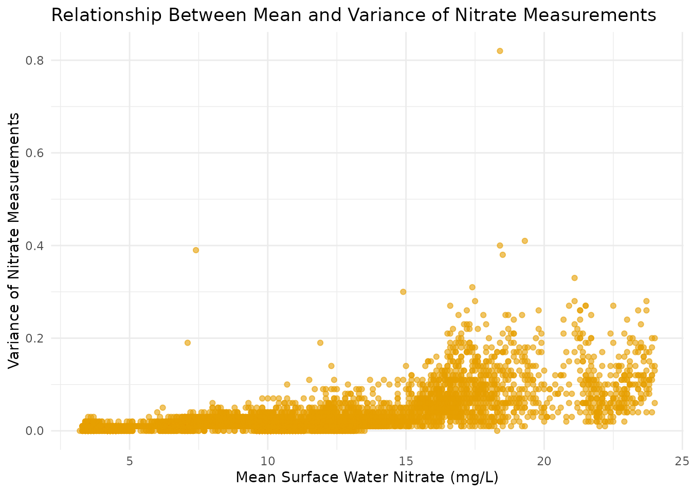

Introduction to neonNitrate
Rimlan Lora Alva
5 November 2025
Source:vignettes/neonNitrate-introduction.Rmd
neonNitrate-introduction.RmdIntroduction
The neonNitrate package provides a comprehensive set of
tools to analyze and visualize surface water nitrate data from NEON
sites in Germany. This vignette introduces the key functions,
interactive features, and included datasets for environmental monitoring
and research.
Why Nitrate?
Nitrate levels are a crucial indicator for assessing nutrient pollution and water quality. High concentrations can impact ecosystem health and human populations relying on those water resources.
About the Data
The package includes processed data products to facilitate a wide range of analyses:
- neon_nitrate: Full nitrate time series with site metadata.
- nitrate_clean: Cleaned subset of nitrate samples.
- nitrate_sample_distribution: Sampling snapshot (counts per site/period).
- pop_est: Population or site aggregation estimates (if relevant).
- strata_summary: Stratified (by group/category) summary statistics.
Exploring Package Datasets
1. Nitrate Sample Distribution
A snapshot of sampling effort per site:
data("neon_nitrate", package = "neonNitrate")
data("nitrate_sample_distribution", package = "neonNitrate")Key variables:
- site, n_samples (or your actual variable
names)
2. Full Nitrate Dataset
Complete time series with measurement detail:
head(neon_nitrate)
#> # A tibble: 6 × 12
#> start_date_time end_date_time surf_water_nitrate_mean
#> <dttm> <dttm> <dbl>
#> 1 2020-03-01 00:00:00 2020-03-01 00:15:00 9.6
#> 2 2020-03-01 00:15:00 2020-03-01 00:30:00 9.6
#> 3 2020-03-01 00:30:00 2020-03-01 00:45:00 9.6
#> 4 2020-03-01 00:45:00 2020-03-01 01:00:00 9.6
#> 5 2020-03-01 01:00:00 2020-03-01 01:15:00 9.6
#> 6 2020-03-01 01:15:00 2020-03-01 01:30:00 9.6
#> # ℹ 9 more variables: surf_water_nitrate_minimum <dbl>,
#> # surf_water_nitrate_maximum <dbl>, surf_water_nitrate_variance <dbl>,
#> # surf_water_nitrate_num_pts <dbl>, surf_water_nitrate_exp_uncert <dbl>,
#> # surf_water_nitrate_std_er_mean <dbl>, final_qf <dbl>, month <dbl>,
#> # year <dbl>
head(nitrate_sample_distribution)
#> # A tibble: 6 × 2
#> surf_water_nitrate_mean n
#> <dbl> <int>
#> 1 10 427
#> 2 9.8 423
#> 3 10.1 322
#> 4 10.5 312
#> 5 4.2 303
#> 6 4.3 296Using the Interactive Dashboard
To launch the interactive Shiny dashboard:
run_app()If you see “Could not locate Shiny app directory,” ensure your
app is in inst/app/ and referenced correctly in
run_app().
Basic Data Visualization
Count of Samples by Site
library(ggplot2)
library(dplyr)
data("nitrate_sample_distribution", package = "neonNitrate")
ggplot(nitrate_sample_distribution, aes(x = surf_water_nitrate_mean, y = n)) +
geom_col(fill = "#009E73") +
labs(
title = "Samples Collected per Nitrate Concentration",
x = "Mean Surface Water Nitrate (mg/L)",
y = "Number of Samples"
) +
theme_minimal()
Analysis: Median Nitrate by Site
library(dplyr)
library(ggplot2)
library(neonNitrate)
data("neon_nitrate", package = "neonNitrate")
# Convert start_date_time to Date
neon_nitrate <- neon_nitrate %>%
mutate(start_date_time = as.Date(start_date_time))
# Time series plot of mean nitrate
ggplot(neon_nitrate, aes(x = start_date_time, y = surf_water_nitrate_mean)) +
geom_line(group = 1, color = "#0072B2") +
geom_point(alpha = 0.5, color = "#D55E00") +
labs(
title = "Temporal Patterns of Surface Water Nitrate",
x = "Date",
y = "Mean Surface Water Nitrate (mg/L)"
) +
theme_minimal()
Plot of Nitrate Variability (Variance)
ggplot(neon_nitrate, aes(x = surf_water_nitrate_mean, y = surf_water_nitrate_variance)) +
geom_point(alpha = 0.6, color = "#E69F00") +
labs(
title = "Relationship Between Mean and Variance of Nitrate Measurements",
x = "Mean Surface Water Nitrate (mg/L)",
y = "Variance of Nitrate Measurements"
) +
theme_minimal()
Best Practices
- Use the dashboard to explore interactive plots and summary statistics.
- Rely on grouped summaries to compare across sites/timeframes.
- Check for missing data and outliers before modeling.
- Use confidence intervals if you perform any statistical estimation.
Next Steps
- Try further data wrangling with dplyr or tidyr if needed.
- Document your analyses with exported visuals and tables.
- Explore each function with the help system,
e.g.
?run_app.
References
- National Ecological Observatory Network (NEON): https://www.neonscience.org
- For nitrate research background: [Any key paper or citation required for your work]
Getting Help
-
Package documentation:
?neonNitrate -
Function help:
?run_app -
Dataset help:
?nitrate_sample_distribution,?neon_nitrate